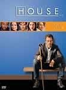
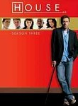
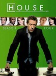

House
Stephen Klancher
...has seen 108
...has seen 1.8 hours
...has not seen 1.1 hours

Timeline
Most Recent:
Holding On
First Unseen:
Paternity (# 2)
...has seen 108
...has seen 1.8 hours
...has not seen 1.1 hours
Timeline
Most Recent:
Holding On
First Unseen:
Paternity (# 2)


Stephen Klancher: October 15, 2009 
Not quite as enjoyable as the more current seasons, but there are a few scenes setting the tone for House's character which are the whole reason the show got so good.

Stephen Klancher: SEEN
This was the first episode I watched. Sometime late 2007 in Brea with Bob. I wasn't too excited about it and didn't give the show another try until late 2009.

Stephen Klancher: September 29, 2009
There were some things recently which sounded really interesting in House, a series long since recommended to me by many people. I was told that if I were interested I should at least watch the season leading up to it. Well, I screwed up and went back a season further. I hate jumping around and not starting from the beginning in a series, but oh well. This is my first episode, other than some random single episode a few years ago. After a night of watching 5 of them I'm hooked. The whole new-team weed out process is really fun.
Stephen Klancher: September 29, 2009
The mirror guy was a really fun plot device. Amusing every time it moved to a scene with someone new in the room.
Stephen Klancher: October 5, 2009
Funny. Would have been interesting for that to not have been a trick.
Stephen Klancher: October 5, 2009
This episode was amazing. I absolutely love seeing reality/memory/dream blurred. The no face, no label memory scene was really cool. Good episode from any other angle too... The intro was a great hook.
Stephen Klancher: October 13, 2009
Accidentally skipped over this one yesterday. Interesting about House vs pain.
Stephen Klancher: October 12, 2009
In large part to the patient's condition, this episode was hilarious.
Stephen Klancher: October 12, 2009
Oh noes. When first discussed before I had seen it, this was the episode that Bob and Brett both proclaimed to blow their minds (paraphrasing here...). Then almost in unison: "I loved it"/"I hated it". In fact Bob stopped watching after this until he was coaxed by Brett that it was worth it and ended up agreeing.
I don't accept it. I'm treating it like a real trauma. I'll just let my mind deny that it happened.
I don't accept it. I'm treating it like a real trauma. I'll just let my mind deny that it happened.
Stephen Klancher: October 18, 2009
This is literally why I watched the series. Having been told how this season ended, years of Bob and Brett recommending House finally worked. First I said I would just watch this episode, but I was told I would really have to watch the season to lead into it. But I screwed up and started a season earlier. Anyway, I love insanity plots! Worth the hype!
Stephen Klancher: October 18, 2009
Well done and enjoyable cleanup of the fallout from the end of the previous season.
Stephen Klancher: October 22, 2009
Fun watching House cooking. "I think you may have just saved my balls."
Stephen Klancher: October 21, 2009
Oops, I jumped ahead an episode... JEJ was pretty awesome as the Tyrant and Chase feels like much more of a character to me after seeing that. Since I started at fourth season, I didn't have three seasons to establish him while he was on the original team, so this felt like finally seening him as a real main character instead of just Princeton Plainsboro's only surgeon.
Stephen Klancher: November 19, 2009
I took a break from House for a bit, partially unintentionally... I had an HD copy of this episode and I decided that I would wait until I had my projector screen up to take advantage of the extra measure of quality. But then that dragged on for a few weeks before that was actually up... It looked great though.
Good show of emotion from everyone involved. Chase seems like so much more of a real person with the guilt he's carrying around now. Wilson has been out of the spotlight but is still hurting. House was forced to sincerely consider that he might still be messed up.
Good show of emotion from everyone involved. Chase seems like so much more of a real person with the guilt he's carrying around now. Wilson has been out of the spotlight but is still hurting. House was forced to sincerely consider that he might still be messed up.
Stephen Klancher: December 16, 2009
Detective guy is a little annoying, but oh well. Drugging Wilson and giving his speech was pretty amusing.
Stephen Klancher: December 28, 2009
Good episode. The moral is don't trip on DXM for 12 years... unless that's what makes you happy.
Stephen Klancher: January 19, 2010
I like Wilson focused episodes. It was actually really funny seeing the team run around in the background working on House cases with one line quips as they run by: "It wasn't the tennis!" Also, "Why did you make me head of Oncology?" "Not because you have the most organs!"
Stephen Klancher: January 20, 2010
Great episode. Gay House, fooling Foreman, the criminal caring for his friend who is secretly a cop...
Stephen Klancher: February 9, 2010
When I don't watch House for a while I forget how awesome it is. The sociopath was fun to watch. It reminds me I should watch more than just the one episode of Dexter I've seen.
Stephen Klancher: April 1, 2010
Upon seeing some of those black hole scenes all I could think was "Wormhole Technology." This is a test of a redirected ep marked seen.
Stephen Klancher: April 14, 2010
Foreman and Taub on Vicodin! The lockdown was a cool way to create some different character situations than normal.
Stephen Klancher: May 5, 2010
Some amusing scenes with everyone being paid by Wilson to take House out. Looking forward to seeing House get super self destructive again, if that's where they're going with it.
Stephen Klancher: May 12, 2010
I've had no shortage of love for House recently anyway, but this was the best episode in a while. Not only was it inevitable fun to see House definitely going more self destructive again, but I love the way they film some of those scenes where he is in scenes mixing the present moment with his memory or imagination.
Stephen Klancher: May 22, 2010
Some very intense scenes there... The accident scene in the beginning had an eirily similar feel to the bus crash with Amber. I would have liked the episode to end differently.
Although with the persistent theory I have about shows I like, I just believe that at any point they might reveal that the entire show has been the main character's delusion. I'd love the series to end with the camera pulling out showing him in a padded room with someone lamenting that "The treatment isn't working... he's still under the delusion that he's a doctor..." Would also work well for Scrubs...
Although with the persistent theory I have about shows I like, I just believe that at any point they might reveal that the entire show has been the main character's delusion. I'd love the series to end with the camera pulling out showing him in a padded room with someone lamenting that "The treatment isn't working... he's still under the delusion that he's a doctor..." Would also work well for Scrubs...
Stephen Klancher: September 22, 2010
I was very amused that they did a fake out on the hallucination when Cuddy hid.
Stephen Klancher: October 17, 2010
Sometimes she sees things that are on fire and other horrors. Finally a character to which I can relate.
Stephen Klancher: November 27, 2010
Pretty cool episode. CDC lockdown and isolation rooms are scary. :-(
Stephen Klancher: April 17, 2011
Really fun scenes with the zombies, sitcom, 50s, and Butch Cassidy and the Sundance Kid. Pretty sad ending though.